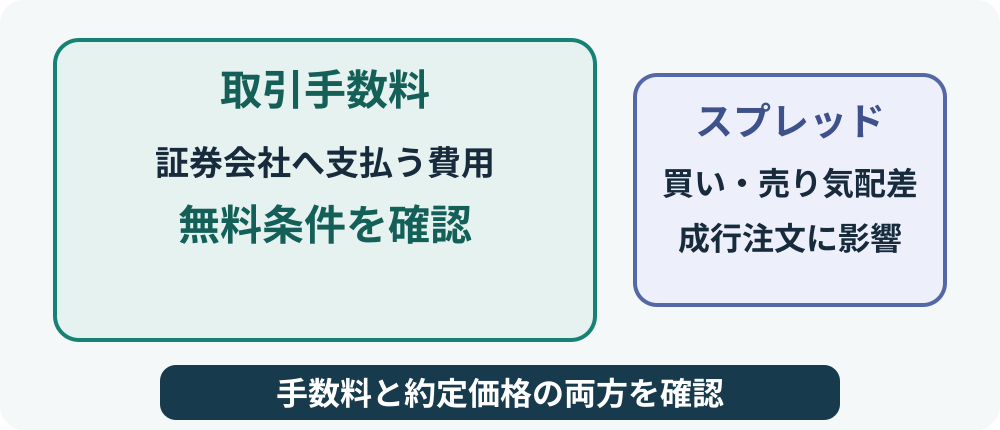

STOCK INVESTING / COST
株式の売買手数料とは？無料条件とスプレッドの注意点
国内株式を売買するとき、まず確認したいのが証券会社に支払う取引手数料です。証券会社によって料金体系や無料になる条件が異なります。また、手数料が無料でも、成行（なりゆき）注文では買い気配と売り気配の差であるスプレッドの影響を受けます。手数料の条件を中心に、注文方法による違いも押さえておきましょう。
1. 株式の売買コストは何で決まる？
売買コストの中心は、証券会社に支払う取引手数料です。手数料の料金体系と無料条件を確認したうえで、注文時の価格にも目を向けましょう。特に成行注文では、買い気配と売り気配の差が約定価格に影響します。

| コストの種類 | 内容 | 確認する場所 |
|---|---|---|
| 取引手数料 | 売買の成立に対して証券会社へ支払う費用。無料コースや無料条件がある | 証券会社の手数料コース・取引報告書 |
| スプレッド | 最も高い買い気配と最も安い売り気配の差。成行注文など、反対側の気配ですぐに約定する注文では価格に影響する | 注文画面の板・売買気配 |
| 価格変動・約定差 | 注文から約定までに価格が動くことや、注文数量に対して板の厚みが足りず複数価格で約定することによる差 | 注文時の気配と約定履歴 |
| その他の費用 | 信用取引の金利・貸株料、外国株の為替手数料など。現物の国内株式とは条件が異なる | 取引種類・商品ごとの費用説明 |
この記事では、国内上場株式の現物取引を中心に、取引手数料とスプレッドを説明します。信用取引、米国株、投資信託などは費用の仕組みが異なるため、同じ条件として扱いません。
2. 取引手数料の仕組みと無料条件
取引手数料は、株式の売買を証券会社に取り次いでもらう際に発生する費用です。従来は1回の注文ごと、または1日の約定代金合計に応じて手数料が決まる料金体系が一般的でした。現在は国内株式の手数料を無料にするネット証券もあります。
無料でも適用条件を確認する
2026年11月14日に確認できる主な公式案内では、例えば次のような条件が示されています。
| 証券会社・制度 | 国内株式の手数料無料条件・注意点 |
|---|---|
| SBI証券「ゼロ革命」 | インターネットコースのインターネット取引で、所定の電子交付設定などの条件を満たすと国内株式の現物・信用取引が無料。対象範囲や条件は公式案内で確認する |
| 楽天証券「ゼロコース」 | 国内株式の現物・信用取引が約定代金にかかわらず無料。原則として指定のSOR（Rクロスを含む）の利用同意が必要 |
無料化の条件は証券会社や取引方法によって異なります。口座コース、注文経路、電子交付やSORの設定に加え、現物・信用、単元株・単元未満株などの取引区分も確認してください。NISA口座では別の手数料無料制度が適用される場合もあります。「その証券会社は手数料無料」とだけ覚えるのではなく、自分の口座設定と注文方法で無料になるかを確認してください。
また、信用取引では売買手数料が無料でも、買方金利や貸株料などが発生することがあります。現物取引と信用取引を混同しないようにしましょう。
3. スプレッドとは？買値と売値の差
スプレッドは、注文板に表示されている最も高い買い注文の価格（最良買気配）と、最も安い売り注文の価格（最良売気配）の差です。例えば、買い気配が2,499円、売り気配が2,501円なら、スプレッドは2円です。
| 注文板の例 | 価格 | 意味 |
|---|---|---|
| 最良売気配（売りたい人の最低価格） | 2,501円 | 今すぐ買う場合に相手になりやすい価格 |
| 最良買気配（買いたい人の最高価格） | 2,499円 | 今すぐ売る場合に相手になりやすい価格 |
| スプレッド | 2円 | 売り気配と買い気配の差 |
スプレッドは証券会社が受け取る手数料ではなく、注文板で買い手と売り手の希望価格が離れている幅です。成行買いは通常、最も安い売り気配で、成行売りは最も高い買い気配で約定するため、スプレッドの影響を受けます。これは証券会社に別途支払う料金ではなく、約定価格に表れる取引コストです。
スプレッドが広がりやすい場面
- 売買高や注文数量が少ない銘柄
- 市場の開始直後や終了間際、重要ニュースの直後など価格が動きやすい時間
- 売り注文・買い注文の一方に偏りがあるとき
- 取引所の立会市場ではなく、別の取引方式や単元未満株サービスを利用するとき
一般に、売買が活発で注文板に十分な数量が並ぶ銘柄は、売買気配の差が小さくなりやすい傾向があります。ただし、流動性が高い銘柄でも、相場急変時にはスプレッドが広がることがあります。
4. 100株を売買した場合の計算例
株価2,500円の株式を100株買うケースを考えます。注文板の最良買気配が2,499円、最良売気配が2,501円で、それぞれの価格に100株以上の注文があり、手数料無料の条件を満たしていると仮定します。
| 項目 | 計算 | 金額 |
|---|---|---|
| 気配の中間値（比較用） | (2,499円＋2,501円)÷2 | 2,500円 |
| すぐに買う場合 | 2,501円×100株 | 250,100円 |
| すぐに売る場合 | 2,499円×100株 | 249,900円 |
| 買いと売りの差 | (2,501円−2,499円)×100株 | 200円 |
| 取引手数料 | 無料条件を満たす場合 | 0円 |
この例では、成行で100株買うと売り気配の2,501円で、成行で100株売ると買い気配の2,499円で約定する想定です。気配の中間値2,500円を比較の目安にすると、買いでは100円高く、売りでは100円安くなります。同じ気配が維持されたまま買ってすぐ売る場合、往復の価格差は合計200円です。中間値は比較用の基準であり、実際に約定できる価格ではありません。
スプレッド2円は、株価2,500円に対して0.08%です。往復取引なら100株で200円、1,000株で2,000円の価格差になります。実際には注文数量が板の数量を超えると、複数の価格で約定する場合もあります。
5. 注文方法と流動性でコストは変わる
成行注文
成行注文は価格を指定せず、成立を優先する注文です。買い注文なら売り板にある注文と、売り注文なら買い板にある注文と順に成立します。約定しやすい一方、板が薄い銘柄や価格が急変している場面では、想定より不利な価格で成立する可能性があります。
指値（さしね）注文
指値注文は、買いなら指定価格以下、売りなら指定価格以上での成立を求める注文です。指定価格より不利な価格では約定しませんが、相手となる注文が現れなければ成立しない、または一部だけ成立することがあります。なお、買い指値を最良売気配以上に置くなど、反対側の気配と重なる価格を指定すれば、注文直後に約定してスプレッドをまたぐことがあります。指値だからスプレッドの影響が必ずなくなるわけではありません。
東証の売買は、価格優先・時間優先の原則に基づく競争売買で成立します。同じ価格なら先に出された注文が優先されます。注文方法や約定の仕組みは、日本取引所グループの売買成立の説明で確認できます。
呼値（よびね）の単位にも注意
株価には、注文できる価格の刻み（呼値の単位）が定められています。銘柄や株価水準によって刻みが異なるため、希望する価格を常に1円単位で指定できるとは限りません。呼値の単位は制度変更もあるため、最新の対象区分をJPXの呼値の単位で確認してください。
なお、JPXは2027年3月1日から、現行のTOPIX500構成銘柄区分を基礎とした呼値の適用を、銘柄ごとの流動性指標（STR）に基づく方式へ変更する予定を公表しています。制度の基準日を確認し、古い呼値一覧をそのまま使わないようにしましょう。
6. 証券会社・銘柄を選ぶときの確認項目
- 自分の取引が無料対象か：現物・信用、課税口座・NISA、単元株・単元未満株、注文経路を区別して確認する。
- 無料化の条件：電子交付、SOR利用同意、コース設定など、必要な設定があるか確認する。
- 買い気配と売り気配：注文直前に最良気配とスプレッドを確認する。前日終値や現在値だけで判断しない。
- 板の数量：自分の注文数量に対して、最良気配付近に十分な注文があるか確認する。
- 注文方法：価格を優先するなら指値、成立を優先するなら成行というように、優先したい条件に合わせる。
- 売買以外の費用：信用取引の金利・貸株料、外国株の為替コストなど、取引種類に応じた費用も確認する。
個別株投資では、売買コストだけでなく、企業を調べる時間や保有後に情報を確認する負担もあります。個別株とインデックス投資の費用・手間の違いは個別株投資とインデックス投資の比較、投資信託の保有コストは投資信託の信託報酬と費用も参考になります。
まとめ
株式を売買するときは、まず証券会社の取引手数料と無料条件を確認しましょう。そのうえで、成行注文では買い気配・売り気配の差であるスプレッドが約定価格に影響すること、注文数量や板の厚みによっても約定価格が変わり得ることを押さえておくと、実際の取引コストを把握しやすくなります。
- 国内株式には取引手数料無料のコースがあるが、適用条件を確認する。
- 成行注文は反対側の気配で約定するため、スプレッドの影響を受ける。指値注文でも、指定価格によってはスプレッドをまたいで約定する。
- 成行注文は成立を優先し、指値注文は価格条件を優先する。
- 手数料だけでなく、気配・板の数量・注文方法まで確認して取引する。
参考資料
- 日本取引所グループ「売買成立の方法」 — 価格優先・時間優先、成行・指値注文の仕組み。
- 日本取引所グループ「呼値の単位」 — 銘柄・株価水準ごとの価格の刻みと制度変更。
- 日本取引所グループ「株価検索 - はじめての方へ」 — 最良買気配・最良売気配の意味。
- SBI証券「ゼロ革命（国内株式手数料無料）の対象になる条件」 — 対象コース・電子交付などの適用条件。
- 楽天証券「現物取引手数料」 — ゼロコースとSOR利用同意の条件。